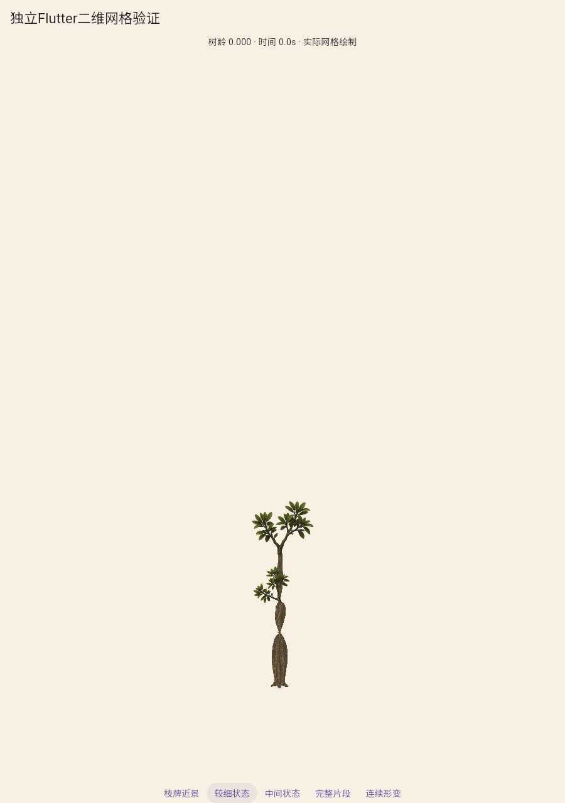
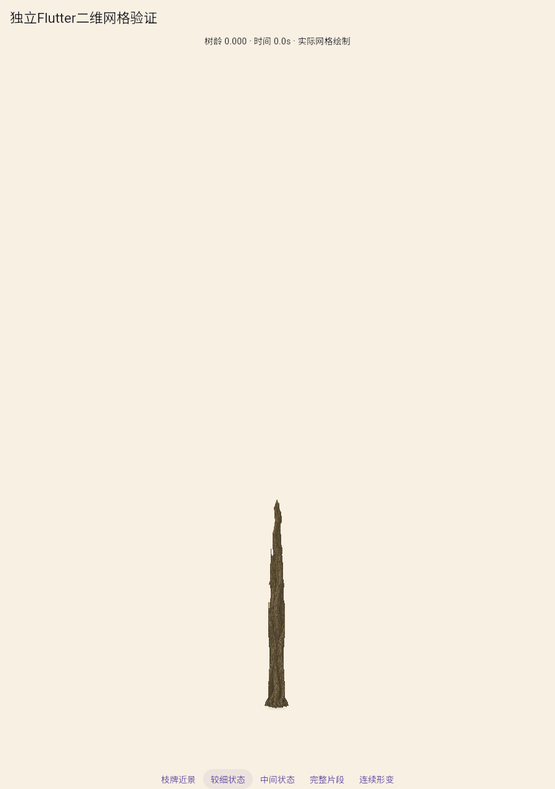
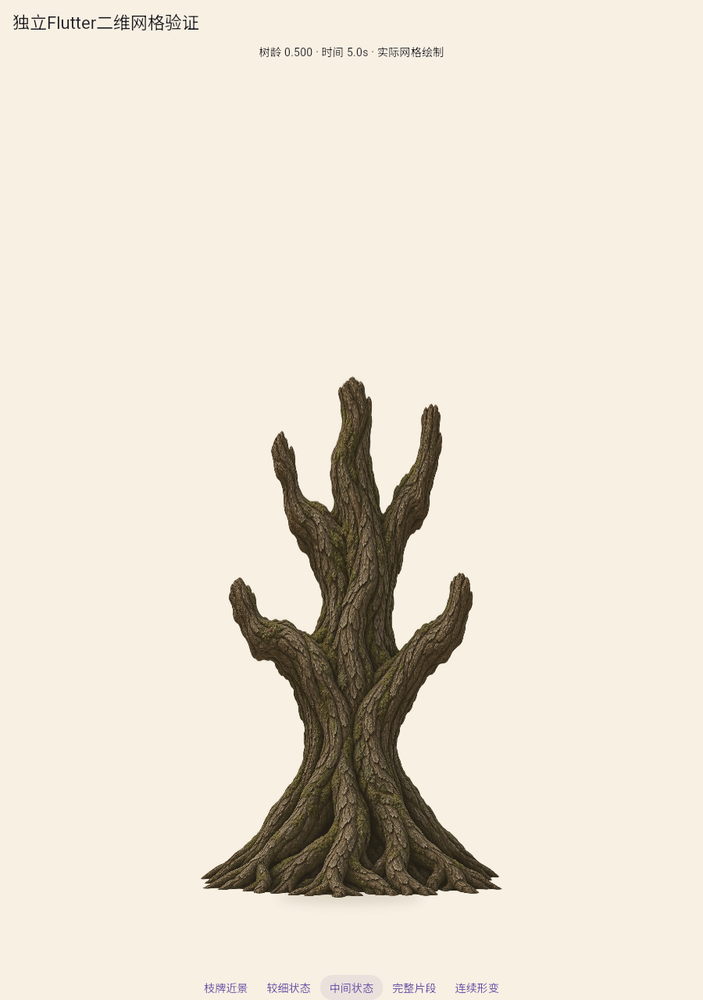
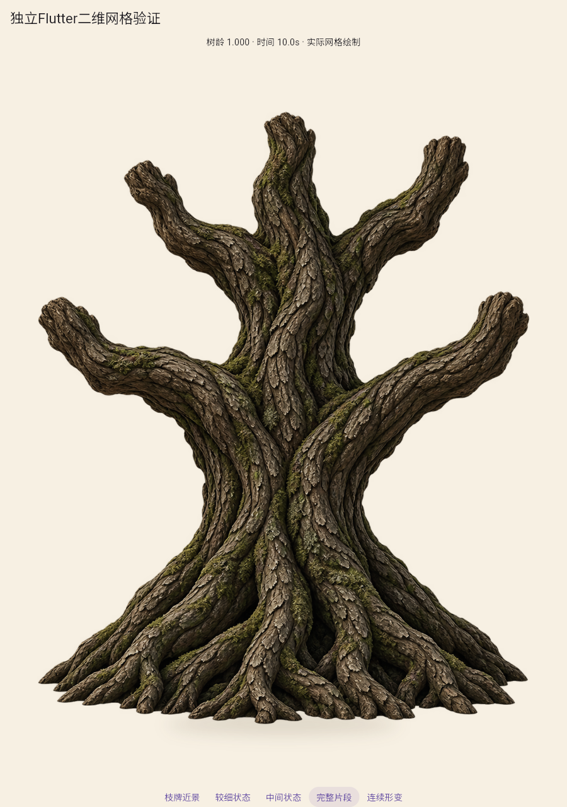
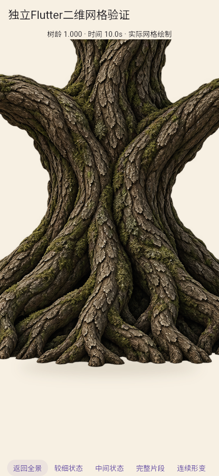
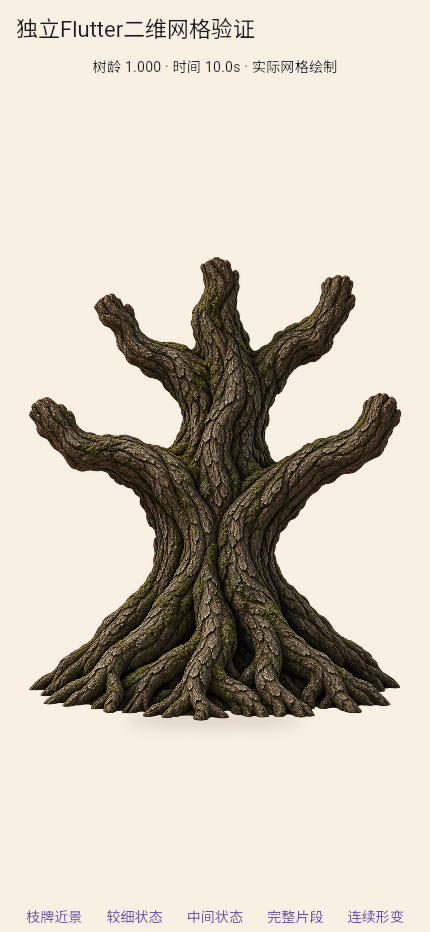

有序截面直接控制顶点：局部形变验证
本页只有局部木体，没有叶冠、木牌或完整幼苗。新完整整树样件未交付，A2未通过。

旧三骨边混合：幼态夹细，70个主木体三角翻面。

未重现葫芦状夹细；细线枝和木纹形变仍待整改，不是完整树苗。

同一UV和局部截面控制，粗截口不是自然细梢。

原源体仅用于方法验证，没有新整树验收结论。

近景观察连续根颈，外围根脚被裁切，不当作全景。

430×932浏览器视口，非实体手机。
局部连续形变
101个实际Flutter状态、10.1秒。编码10fps不是运行帧率；没有阶段整树换图。
两个完整插值区间审计 · 中间翻折反例被拒绝 · 运行与哈希 · 控制参数 · 同构建旧分支回归 · 文件媒体复核 · 结论与下一项